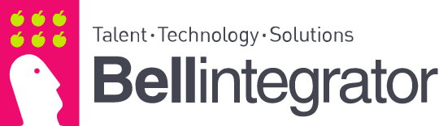
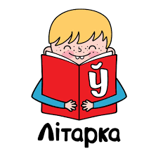
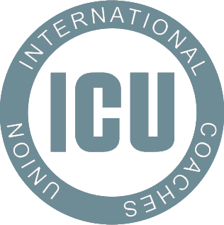
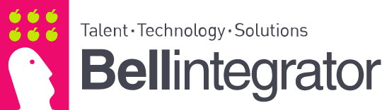
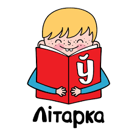
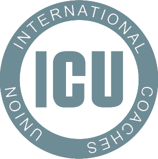

Канстанцін Лойчыц
ЛІНГВІСТЫЧНЫЯ ПАСЛУГІ НА БЕЛАРУСКАЙ, УКРАІНСКАЙ, РУСКАЙ І АНГЛІЙСКАЙ МОВАХ
ПІСЬМОВЫЯ І ВУСНЫЯ ПЕРАКЛАДЫ, ЛАКАЛІЗАЦЫЯ, КІРАВАННЕ ПРАЕКТАМІ,
ТРЭНІРОЎКА ШІ І АНАТАЦЫЯ ДАНЫХ
Бізнес / Медыцына / Літаратура / Лакалізацыя
“Трапная мова — бізнесу аснова!”
Калі справа тычыцца якаснага перакладу, дакладнасць — гэта ўсяго пачатак. Глыбокае разуменне прадмета, мэтавай аўдыторыі і культурнага кантэксту — вось што ператварае словы ў сэнсы.
Я — Канстанцін Лойчыц, дасведчаны перакладчык і кансультант па лакалізацыі. Спецыялізуюся на:
- пісьмовых перакладах літаратуры і тэкстаў розных тэматык
- паслядоўных вусных перакладах для бізнесаў, НДА, адукацыі і медыцыны
- лакалізацыі лічбавага кантэнту (гульні, вэбсайты, праграмнае забеспячэнне і відэа)
- кіраванні лінгвістычнымі і лічбавымі праектамі
- трэніроўцы штучнага інтэлекту і анатацыі даных
Адпаведнасць перакладаў мэтавай аўдыторыі, акуратнасць, дакладнасць і ўлік культурнага кантэксту — мой фокус.
Словы маюць значэнне.
Дык данясём жа вашыя да патрэбнай аўдыторыі разам!
ПРА МЯНЕ
Дбайнасць | Надзейнасць | Улік культурнага кантэксту | Шматпрофільнасць
Шукаеце прафесійнага лінгвіста, кансультанта з шматпрофільным досведам або каардынатара пад ваш праект?
Я — Канстанцін Лойчыц, моўны прафесіянал з досведам працы ў вусных і пісьмовых перакладах, лакалізацыі і кіраванні праектамі. Мае працоўныя мовы: беларуская, украінская, руская і англійская. Спецыялізуюся на літаратурным, палітычным, медыцынскім і бізнес-кантэнце, а таксама на шматпрофільнай лакалізацыі.
За плячыма маю лінгвістычную адукацыю (Беларусь, Кітай), некалькі бізнес сертыфікацый (Беларусь і Польшча) і шырокі практычны досвед ад вусных перакладаў на канферэнцыях да кіравання вялікімі шматмоўнымі праектамі. У маёй працы кожнае слова мае вагу, а перадача сэнсаў — гэта не проста літаральная дакладнасць, але і выяўленне і ўлік кантэксту.
Мой досвед уключае працу ў разнастайных фарматах і сферах ведаў, а кожны праект за які я бяруся, выконваецца з датрыманнем кліенцкіх стандартаў і моўна-культурных норм.
Для працы над маштабнымі праектамі я цесна супрацоўнічаю з уласна праверанымі камандамі беларускіх і ўкраінскіх лінгвістаў, забяспечваючы паслядоўнасць, якасць і своечасовую здачу работы.
ПАСЛУГІ
ПІСЬМОВЫ ПЕРАКЛАД, РЭДАГАВАННЕ І ВЫЧЫТКА
Прапаную паслугі пісьмовага перакладу, рэдагавання (у тым ліку пострэдагавання машыннага перакладу) і карэктуры тэкстаў дзелавой, палітычнай, культурнай і медыцынскай тэматыкі. Мае тыповыя праекты:
- кнігі і электронныя выданні
- літаратурны пераклад і транскрыяцыя
- аналітычныя справаздачы і эсэ
- папулярныя навуковыя тэксты
ПАСЛЯДОЎНЫ ВУСНЫ ПЕРАКЛАД
Аддалены вусны відэапераклад (праз Zoom, Google Meet і г.д.), аўдыяпераклад (тэлефонныя званкі) і паслядоўны пераклад з выездам на месца паміж беларускай, рускай і англійскай мовамі:
- медыцынскія агляды і кансультацыі
- бізнэс-перамовы, аўдыты і сертыфікацыі
- сустрэчы НДА і дзяржаўных арганізацый
- адукацыйныя і прафесійныя канферэнцыі
ЛАКАЛІЗАЦЫЯ
Як перакладчык і кансультант па лакалізацыі, я займаюся:
- перакладам і лакалізацыяй вэбсайтаў, відэа- і мультымедыйнага кантэнту
- перакладам і лакалізацыяй гульняў і праграмнага забеспячэння
- ацэнкай моўнай якасці з улікам UI/UX патрабаванняў (LQA)
КІРАВАННЕ ПРАЕКТАМІ
Маючы значны досвед у кіраванні складанымі праектамі ў сферах перакладу, лакалізацыі і транскрыпцыі, я забяспечваю ўсебаковую падтрымку ў:
- пошуку і найме кадраў
- планаванні і суправаджэнні праектаў
- каардынацыі каманд
- кантролі якасці
- камунікацыі з заказчыкамі
АНАТАЦЫЯ ДАНЫХ І ТРЭНІРОЎКА ШТУЧНАГА ІНТЭЛЕКТА
Прафесійная праца з данымі і кантэнтам на беларускай і ўкраінскай мовах (з іх рознымі дыялектамі, сістэмамі пісьма і правапісамі):
- транскрыпцыя аўдыё- і відэаматэрыялаў
- анатацыя шматмоўных тэкстаў (інтэрв’ю, навіны, падкасты, сустрэчы і г.д.)
- падрыхтоўка даных для субцітраў, перакладаў або навучання ШІ-мадэляў
ВОДГУКІ
«Канстанцін праявіў высокі ўзровень лінгвістычнай кампетэнцыі падчас распрацоўкі моўных тэстаў (па-беларуску) і забяспечваў змястоўную зваротную сувязь, што істотна падвысіла якасць нашых праектаў [...] Шчыра рэкамендуем Канстанціна як лінгвіста і калегу».
— Галоўны менеджар па кадрах
глабальнай лінгвістычнай кампаніі
«Незалежна ад таго, ішлося пра стварэнне допісаў для сацыяльных сетак ці выкананне складаных перакладчыцкіх задач, якасць ягонай працы заўсёды заставалася на найвышэйшым узроўні [...]»
—Заснавальнік міжнароднай НДА, выдавец
МНЕ ДАВЕРЫЛІ
 







ТРОШКІ СТАТЫСТЫКІ
📄 пераклаў і перастварыў больш за 1 000 000 слоў 📄
🎮 лакалізаваў больш за 50 відэа, гульняў і лічбавых прадуктаў 🎮
🌍 правёў больш за 25 сесій шматмоўнага вуснага перакладу 🌍
🗣️ працую з 4 мовамі 🗣️
КАНТАКТЫ
Калі вы гатовыя да наступнага кроку — я тут, каб дапамагчы вам яго зрабіць. Напішыце мне на электронную пошту, пакіньце паведамленне, патэлефануйце або заплануйце бясплатную 15-хвілінную відэа-кансультацыю.